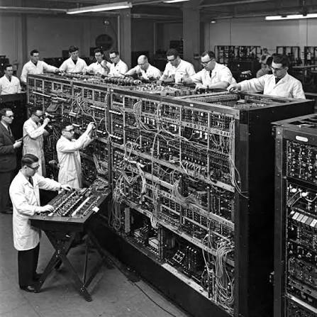
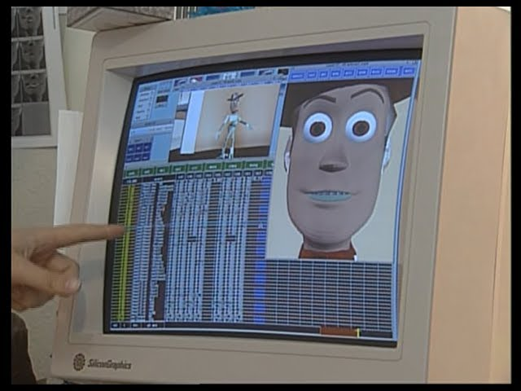
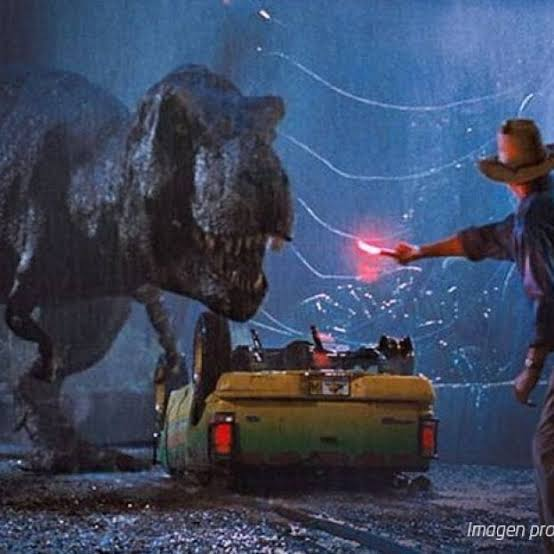
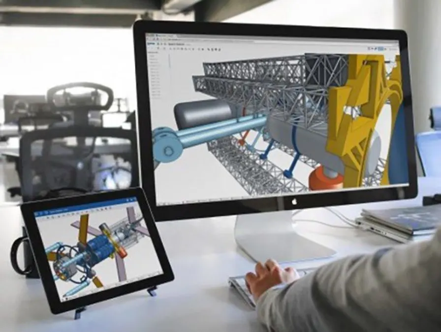
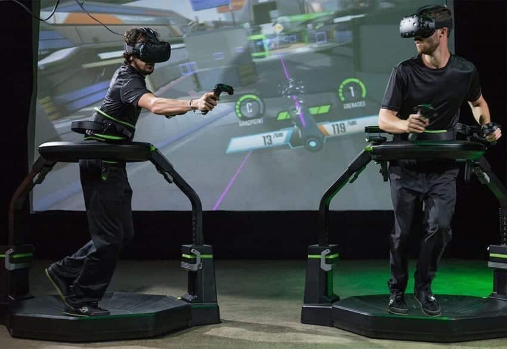
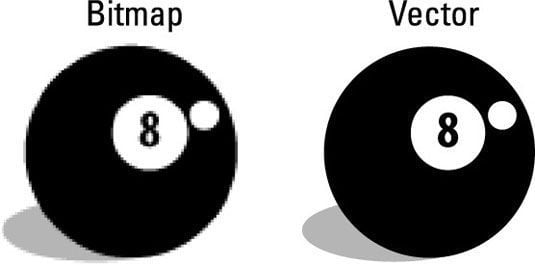
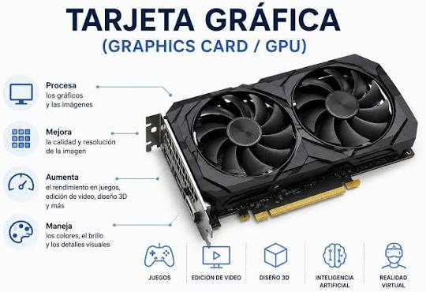
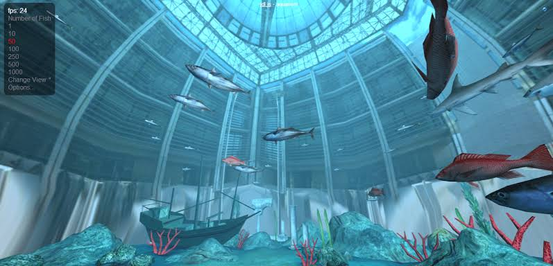
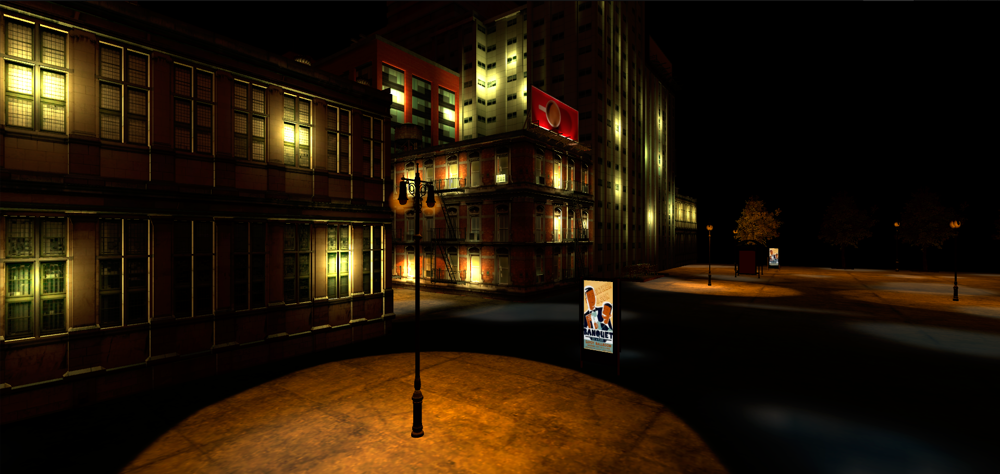

Momento 1
Limitación anterior: Calculos Complejos a Mano
Cambio: Eniac la primera computadora con la capacidad de hacer esos calculos
Impacto: El nacimiento de la programacion
Ejemplo actual: El impulso de la era digital

Disciplina que se encarga de generar, manipular y representar imágenes digitales mediante algoritmos y técnicas de visualización.
Autor: Jonathan Ulises Moreno Cisneros




Limitación anterior: Calculos Complejos a Mano
Cambio: Eniac la primera computadora con la capacidad de hacer esos calculos
Impacto: El nacimiento de la programacion
Ejemplo actual: El impulso de la era digital

Limitación anterior: Poca iteractividad con maquina y escritura
Cambio: Un lapiz optico capaz detectar la posicion señalada en pantalla
Impacto: Poder "dibujar" en la pantalla, creacion dle primer videojuego (Tennis for two)
Ejemplo actual: Dibujo digital por medio de estos lapices
Limitación anterior: Ausencia de interfaces visuales
Cambio: Gracos Vectoriales y mapas de bits
Impacto: Revolucion de diseño grafico, publicidad y desarrollo
Ejemplo actual: Fotografia virtuales, videos y Inteligencia Artificial

Limitación anterior: Todo el procesamiento dependia de la CPU generando cuello de botella
Cambio: GPU, calculos en paralelo y aceleracion de procesos de graficos
Impacto: Eficiencia en graficos 2d y 3d ofreciendo mayor satisfaccion
Ejemplo actual: Desempeño en los juegos competitivos

Limitación anterior: Paginas Web congeladas debido al renderizado todo dependiendo de la CPU
Cambio: WebGL una interfaz de aplicaciones en JavaScript
Impacto: Un mundo a la interactividad y multimedio sin necesidad de programas adicionales
Ejemplo actual: Experiencias de Realidad Virtual

Usuario:Un diseñador de niveles gráfica dentro de un estudio de desarrollo.
Problema: El mapa del videojuego sufre caídas graves de rendimiento (FPS) en ciertas zonas urbanas debido a que la computadora está intentando calcular y dibujar demasiados objetos que el jugador ni siquiera puede ver.
Datos: Las matrices numéricas que contienen las coordenadas de ubicación de los objetos en el espacio tridimensional, los archivos de mallas de polígonos, las texturas y el historial de consumo de memoria de la tarjeta gráfica (VRAM) en tiempo real durante las pruebas de juego.
Representacion: El motor gráfico del desarrollador (como o Unity) genera un mapa de calor 3D interactivo. En lugar de mostrar el juego con sus colores normales, los algoritmos de graficación pintan la pantalla con un código de color especial: las zonas que cargan de forma eficiente se ven azules, mientras que las calles que están sobrecargadas de polígonos invisibles o luces duplicadas brillan en un rojo intenso o blanco incandescente.
Desicion: Al ver la representación gráfica del problema en color rojo, el diseñador toma la decisión técnica: aplica de forma manual un límite virtual que le dice al motor gráfico que destruya o deje de dibujar temporalmente todo lo que quede tapado por las paredes de los edificios principales. Esto reduce la carga geométrica al instante y estabiliza el juego a 60 FPS estables.

Al no tener un color que domine todo se baja a 0, por ende su Max and Min sera 0
Nota CMY: modelo de color sustractivo basado en la mezcla de pigmentos: cian, magenta, amarillo y negro que se utiliza principalmente en el ámbito de la impresión física.
Aqui es opuesto del negro se aumenta al limite de 255, sin embargo el Max y Min permanesera igual
Nota HSV: La principal diferencia entre HSL y HSV está en cómo manejan la claridad o el brillo máximo de un color.
A diferencia de los toros donde sus valores de HSV este tiene un 50% en V, apesar de que sus colores de r g y b sean los mismos
Nota HSL:significa Tono (Hue), Saturación (Saturation) y Luminosidad (Lightness), y se usa de forma intuitiva en diseño web y en código..
La fórmula matemática para convertir colores en el modelo RGB al modelo HSV puede transformarse en un algoritmo implementado en JavaScript:
function convertRGBtoHSV(r, g, b) {
const red = r / 255;
const green = g / 255;
const blue = b / 255;
const max = Math.max(red, green, blue);
const min = Math.min(red, green, blue);
const delta = max - min;
let h = 0;
let s = 0;
let v = 0;
// Valor
v = max * 100;
// Saturación
if (max === 0) {
s = 0;
} else {
s = (delta / max) * 100;
}
// Tono
if (delta !== 0) {
if (max === red) {
h = 60 * (((green - blue) / delta) % 6);
} else if (max === green) {
h = 60 * (((blue - red) / delta) + 2);
} else {
h = 60 * (((red - green) / delta) + 4);
}
}
// Ajustar rango 0–360
if (h < 0) h += 360;
return [h, s, v];
}
Este algoritmo toma los valores de R, G y B y devuelve el tono (H), la saturación (S) y el valor (V) en porcentajes y grados.
La graficación ha tomado varios rumbos en su desarrollo, más sin embargo cumple con cubrir las necesidades del usuario, La historia ha demostrado que la necesidad es más que las delimitaciones de su época, y un papel clave es la automatización que permitió eliminar tareas manuales y reducir el error humano. Y se llegaran más invenciones teniendo en claro imaginación ya que: “Si pasa por la Mente es posible de hacer”, más con la combinación de: conocimientos, planeación y prueba y error
Este recorrido muestra cómo la combinación de fórmulas matemáticas y algoritmos forman parte de la creación digital.